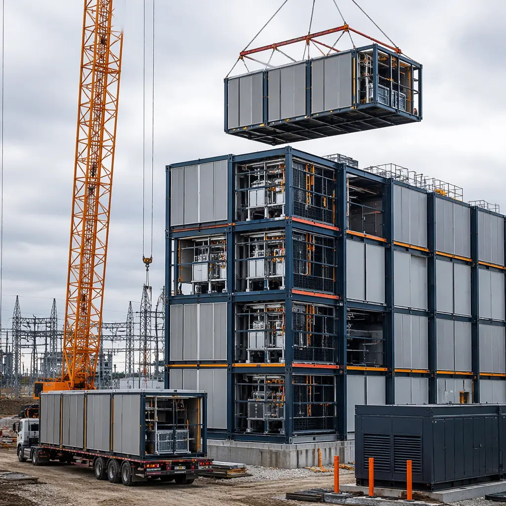
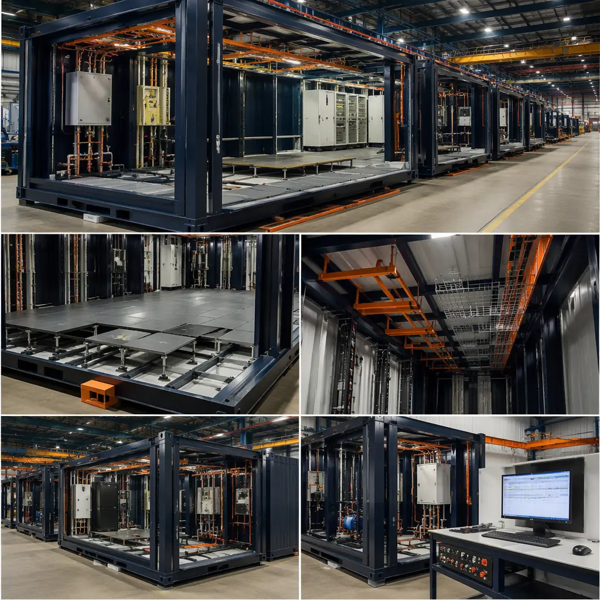
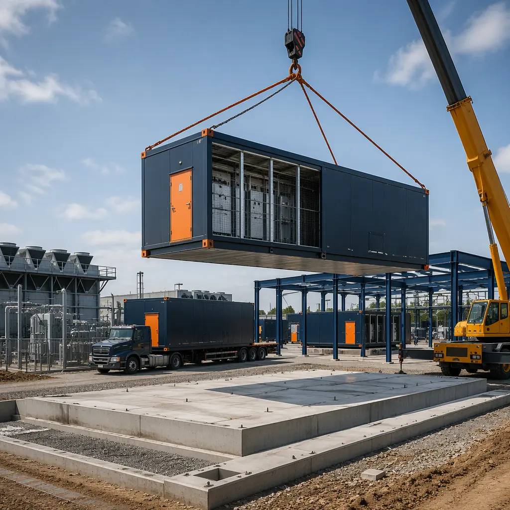
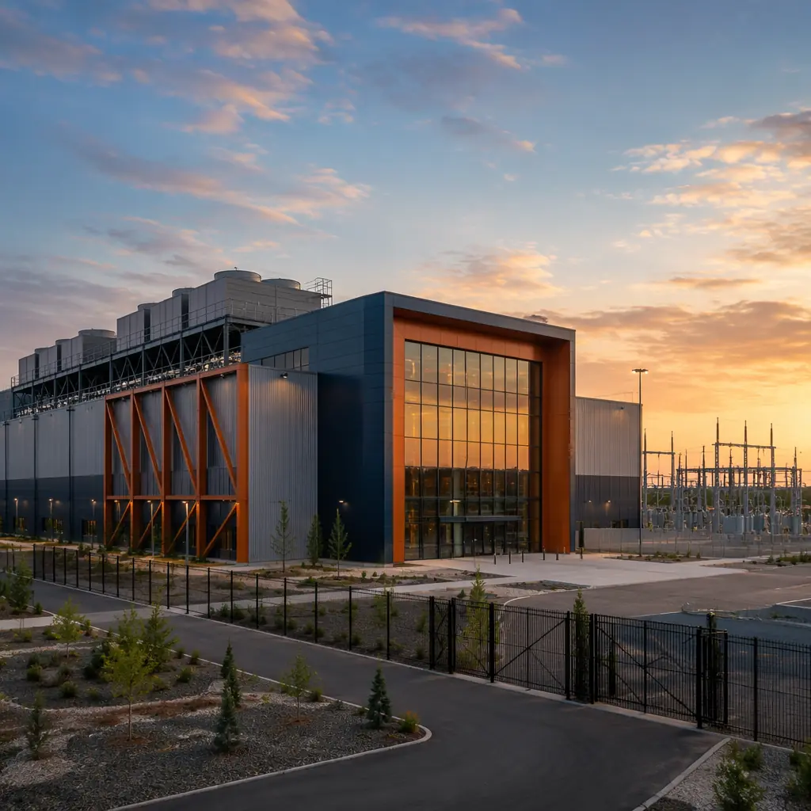

Data center construction is measured in megawatts, not square feet. The decision to build a data center — whether a 2 MW edge facility in a Tier 2 city or a 20 MW colocation campus — is fundamentally a capital allocation problem: how much capital goes into the building shell versus the IT equipment that generates revenue, and how long does that capital sit idle before the first server rack powers on? Modular data center construction changes both sides of this equation. This TCO analysis compares modular versus stick-built across the five cost categories that determine whether your data center project is a capital-efficient asset or a construction-heavy liability: shell cost per MW, power and cooling infrastructure, deployment timeline impact on time-to-revenue, scalability and stranded capacity risk, and 5-year total cost of ownership.

Capital Cost per Megawatt: Modular vs Stick-Built by Tier
Data center construction cost is standardized around a single metric: dollars per critical megawatt (MW) of IT load. This metric normalizes for building size and captures the integrated cost of shell, power infrastructure, and cooling — everything required to deliver usable IT capacity. Here is the 2026 cost comparison:
| Facility Type | Modular Cost/MW | Stick-Built Cost/MW | Modular Advantage |
|---|---|---|---|
| Tier II Edge (2–5 MW) | $7.2–$8.5M | $9.5–$11.5M | 22–26% |
| Tier III Colocation (10–20 MW) | $9.5–$11.5M | $12–$15M | 18–23% |
| Tier III Hyperscale (50+ MW) | $8.5–$10M | $10–$12.5M | 15–20% |
Costs include building shell, electrical infrastructure (switchgear, UPS, PDUs), cooling infrastructure (chillers, CRAH units, piping), and fire suppression — but exclude IT equipment (servers, storage, networking), which costs the same regardless of construction method. The modular advantage is proportionally largest at the 2–5 MW edge scale because stick-built edge facilities carry a disproportionate site mobilization and project management overhead relative to their size. A 2 MW stick-built data center still requires the same general contractor, the same site supervision, and the same permitting process as a 10 MW facility — but spreads those fixed costs over one-fifth the revenue-generating capacity. Modular eliminates this scale penalty by shifting construction to a factory where the cost per MW is nearly constant from 2 MW to 50 MW.

Power Density and Cooling: Why Modular Wins at Higher kW/Rack
The data center industry is moving from 5–8 kW per rack to 20–50 kW per rack as AI training clusters and GPU-dense infrastructure become standard. Higher power density changes the construction economics in two ways that favor modular construction.
Cooling infrastructure scales non-linearly with density. At 5–8 kW per rack, conventional air cooling with hot-aisle/cold-aisle containment is adequate, and construction cost per MW is relatively flat. At 20–30 kW per rack, rear-door heat exchangers or direct-to-chip liquid cooling become necessary, adding $1.5–$2.5 million per MW to the cooling infrastructure cost. At 40–50 kW per rack, immersion cooling or full liquid cooling loops are required, and cooling cost per MW doubles relative to air-cooled facilities. In modular construction, the cooling system is integrated into the module design at the factory — liquid cooling pipe networks, CDU (coolant distribution unit) mounting points, and leak detection systems are installed under controlled conditions with factory-level quality assurance. In stick-built construction, the same systems must be retrofitted into a building that was not designed for them, with every pipe penetration, pump mount, and sensor location coordinated across four or more subcontractors.
Electrical infrastructure density compounds the construction challenge. A 5 MW data hall at 8 kW/rack requires approximately 625 racks and a single 5 MW utility feed. The same 5 MW data hall at 30 kW/rack requires only 167 racks — but the electrical infrastructure (switchgear, UPS, busway, PDUs) is nearly identical in cost because the total power draw is the same. The modular advantage here is in the factory integration of electrical systems: busway runs, PDU mounting, and cable tray routing are pre-engineered and pre-installed as part of the module. The stick-built equivalent requires field coordination of the electrical subcontractor with the structural steel, fire protection, and HVAC contractors — the exact coordination problem that causes 40% of data center construction delays, according to Uptime Institute survey data. For the construction methodology comparison, see our article on modular data center construction — edge and colocation facilities.
Time-to-Revenue: The $1.2M/Week Variable
A colocation data center generates revenue the moment the first customer's servers power on. Every week of construction delay is a week of forgone revenue. For a 10 MW colocation facility charging $120/kW/month at 70% utilization, the weekly revenue is approximately $1.2 million. The construction timeline comparison is stark:
- Modular, 10 MW Tier III: 12–16 months from groundbreaking to first customer live (6–8 months site work and foundation + 4–6 months module delivery and commissioning + 2 months customer fit-out). Modules are commissioned in the factory, so the on-site commissioning phase compresses from 3–4 months to 4–6 weeks.
- Stick-built, 10 MW Tier III: 20–28 months from groundbreaking to first customer live (12–16 months building construction + 4–6 months MEP commissioning + 4–6 months customer fit-out).
The 8–12 month time-to-revenue advantage translates to $40–$60 million in additional revenue over the accelerated period — an amount that exceeds the entire hard-cost savings from modular construction. For data center operators and colocation providers, this time-to-revenue variable is the financial case for modular, and the hard-cost savings are a secondary benefit. For the broader ROI analysis applicable to all construction types, see our modular construction ROI guide.

Scalability and Stranded Capacity: The Modular Risk Advantage
Data center demand forecasting is notoriously inaccurate. A colocation provider that builds a 20 MW facility based on a 3-year demand forecast risks two outcomes, both expensive: overbuilding (stranded capacity that sits empty, consuming capital but generating no revenue) or underbuilding (turning away customers because capacity is exhausted, losing them to competitors). Modular construction reduces both risks through phased deployment.
Phased modular deployment. A 20 MW modular data center campus can be built in 5 MW increments, with each phase deployed in 4–6 months. Phase 1 (5 MW) goes live in 14 months; Phase 2 (5 MW) follows 6 months later if Phase 1 reaches 70% utilization within 3 months of opening. If demand stalls, Phase 2 is deferred with near-zero carrying cost — the factory simply does not build the modules until the capital is committed. In stick-built construction, the entire 20 MW shell must be built at the outset because expanding a stick-built data center incrementally is more expensive per MW than building the full capacity at once. The result is that stick-built projects carry 30–50% stranded capacity for the first 2–3 years of operation, while modular projects carry near-zero stranded capacity because capacity is deployed in sync with demand.
Technology refresh flexibility. Data center cooling technology evolves faster than building technology. A data center built in 2026 with air cooling may need liquid cooling capability by 2030. In a modular facility, cooling-dense modules can be swapped or retrofitted at the factory level — a new liquid-cooled data hall module replaces an air-cooled module during a scheduled maintenance window. In a stick-built facility, retrofitting liquid cooling into an air-cooled building requires structural modifications (floor loading for coolant tanks, roof penetrations for dry coolers), MEP reconfiguration, and, in many cases, temporary shutdown of adjacent data halls during the retrofit. For a technology comparison relevant to data center construction, see our article on modular versus traditional construction.
5-Year TCO Comparison: 10 MW Tier III Colocation Facility
The total cost of ownership over 5 years captures capital costs, operating costs, and the time-value-of-money effects that a simple construction cost comparison misses:
| TCO Category (5-Year) | Modular | Stick-Built |
|---|---|---|
| Building shell + MEP (10 MW) | $105M | $135M |
| Construction financing (6% over build period) | $3.9M | $14.2M |
| 5-year maintenance (mechanical/electrical) | $4.2M | $6.5M |
| Energy cost difference (PUE: 1.15 vs 1.35) | $18.4M | $21.6M |
| Phased capacity carrying cost (stranded) | $0.5M | $8.2M |
| 5-Year TCO | $132M | $185.5M |
The $53.5 million TCO advantage (28.8%) is driven primarily by lower construction financing cost ($10.3M saving), reduced stranded capacity ($7.7M saving), and hard-cost savings ($30M). The energy efficiency advantage — modular's tighter building envelope typically yields a PUE of 1.12–1.18 versus 1.30–1.40 for stick-built — contributes an additional $3.2M in 5-year energy savings. For the energy performance data behind these PUE estimates, see our modular building energy efficiency guide.
This TCO analysis does not include the revenue acceleration from the 8–12 month faster time-to-market. Including that variable at $1.2M/week adds approximately $50M in additional colocation revenue over the accelerated period — making the total financial advantage of modular data center construction approximately $100M on a 10 MW facility over 5 years.
